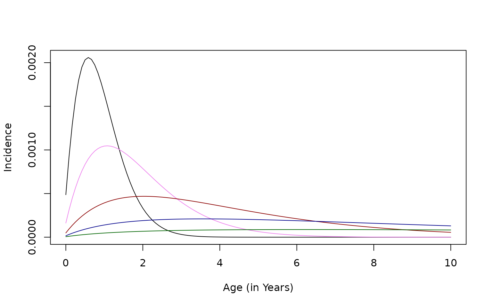

A challenge for malaria is to capture the effects of a history of exposure, which affects malaria infections and the development of immunity. In other models, the issues arising have been handled in a variety of ways, such as expanding the number of compartments in the state space. Here, we handle these through development of variables that describe a history of exposure.
The model is an SIP compartment model, and a set of variables that track exposure. We call a Generalized SIP model. The model has three states:
infected ()
chemo-protected and not susceptible to infection ()
uninfected and not chemo-protected and thus susceptible to infection ()
There are at least two hybrid variables tracking infection:
the mean MoI ()
the mean AoI ()
There is also a set of variables that track cumulative and recent exposure, collectively called . The generalized SIP model is thus a very general framework.
Dynamics
We assume:
the population is stratified by age, so each state variable is a vector
aging is handled by a matrix that also handles age-specific mortality
untreated, simple infections clear at rate and infections overall clear at the rate
Treatment occurs in three ways:
The background treatment rate includes treatment regardless of epidemiological status. It is a function of age, exposure, and time (i.e. for MDA)
The treatment rate in infected humans, is related to moderate and mild malaria (i.e. for MSAT)
The treatment rate in response to malaria incidence: a fraction thats presents with malaria and get treated:
This one has three ways of treating:
There is an implicit assumption about superinfection here: everyone is getting reinfected, and this is a cause of treatment.
(The implementation in ramp.library does not compute
;
is computed as
)
Mean MoI
Mean AoI
Tracking Exposure
We let denote the FoI, and we a set of tracking variables, . One describes cumulative exposure: …and others describe recent exposure:
Functional Responses
We need to write functions to translate the state space into measures of prevalence by various diagnostic tests:
| Skill Set | Math Notation | Code | Depends | Control |
|---|---|---|---|---|
| Force of Infection | foi |
|||
| Pre-Erythrocytic Immunity | F_b |
|||
| Infectious Density | F_X |
|||
| Treatment: Incidence | rho |
MSAT | ||
| Treatment: Prevalence | sigma |
|||
| Treatment: Background | xi |
MDA | ||
| True Prevalence | pfpr |
|||
| Prevalence by LM | pfpr_lm |
|||
| Prevalence by PCR | pfpr_pcr |
|||
| Prevalence by RDT | pfpr_rdt |
|||
| Severe Malaria Incidence | pfi_severe |
|||
| Moderate Malaria Incidence | pfi_moderate |
|||
| Mild Malaria Incidence | pfi_mild |
Prevalence
True prevalence is
We assume the probability of testing positive is a function of the mean MoI and the mean AoI. We develop tracking variables
We have a picture like this:
aoi = seq(20, 400, by = 5)
test_pos = function(aoi, mx=.95, rt=1/100){
mx*exp(-rt*(aoi-20))
}
plot(aoi, test_pos(aoi), type = "l",
xlab = expression(list(alpha, " Age of Infection")),
ylab = expression(list(xi(alpha), " Test Positivity")),
ylim = c(0,1), xlim = c(0,400))
segments(20, 0, 20, 1, lty = 2)
lines(aoi, test_pos(aoi, .8, 1/90))
lines(aoi, test_pos(aoi, .7, 1/80))If the AoI has a distribution in the population with mean and MoI then average test positivity will be approximately:
pr_by_aoi = function(aoi, m, mx=0.95, rt=1/100){
xi = test_pos(aoi, mx, rt)
1 - exp(-xi*m)
}
plot(aoi, pr_by_aoi(aoi, 1, .8, 1/90), type = "l", xlab = expression(list(bar(alpha), " Mean AoI")), ylab = expression(list(x(bar (alpha)), " Apparent PR")), ylim = c(0,1), xlim = c(0,400))
segments(20, 0, 20, 1, lty = 2)
lines(aoi, pr_by_aoi(aoi, 2, .8, 1/90))
lines(aoi, pr_by_aoi(aoi, 4, .8, 1/90))To Do: Draw this picture with a sharkfin function and not an exponential.
Disease Incidence
In these models, we have models for malaria and
The probability of severe disease, per infection, defined as malaria infection accompanied by one or more danger signs.
The probability of severe malaria anemia, per infection, defined as malaria infection accompanied by one or more danger signs.
The probability of moderate disease, per infection, defined as malaria infection and objective fever
The probability of mild disease, per infection, defined as malaria infection and subjective fever
Severe Malaria
We assume that severe malaria is related to recent exposure. We note that exposure to malaria tends to increase with age, and it has been proposed that the risk of severe malaria is reduce by exposure.
in its simplest form
Age and Exposure
We note that exposure to malaria is age-dependent.
foi_age = function(a, foi=1, shft=30, A=1.5, B=2){
aa = (a+shft)/365
foi*A*aa/(B+aa)
}
age = seq(0, 10*365, by=365/12)
plot(age/365, foi_age(age), type = "l", ylim = c(0,1.3), xlab = "Age (in Years)", ylab = "FoI by Age")
segments(0, 1, 10, 1, col = grey(0.5))The model implies that cumulative exposure is concave up:
cum_exposure = function(a, foi=1/365, shft=30, A=1.5, B=2){
fa <- function(a, foi, shft, A, B)
integrate(foi_age, 0, a, foi=foi, shft=shft, A=A, B=B)$value
sapply(a, fa, foi=foi, shft=shft, A=A,B=B)
}
plot(age/365, cum_exposure(age, foi = 10/365), type = "l",
xlab = "Age (in Years)", ylab = "Cumulative Exposure")
lines(age/365, cum_exposure(age, foi = 3/365))
lines(age/365, cum_exposure(age, foi = 1/365)) 
incidence = function(a, foi=3/365, z=1/10, N=100, shft=30, A=1.5, B=2){
w <- sapply(a, cum_exposure, foi=foi, shft=shft, A=A, B=B)
foi_age(a, foi)*z*exp(-w*z)
}
base = incidence(age, 30/365)
plot(age/365, incidence(age, 30/365), type = "l", xlab = "Age (in Years)", ylab = "Incidence", ylim = range(0, base))
lines(age/365, incidence(age, 10/365), col = "violet")
lines(age/365, incidence(age, 3/365), col = "darkred")
lines(age/365, incidence(age, 1/365), col = "darkblue")
lines(age/365, incidence(age, 1/365/3), col = "darkgreen")
cum_incidence = function(a, foi=3/365, z=1/10, N=100, shft=30, A=1.5, B=2){
ci <- function(a, foi, z, N, shft, A, B)
integrate(incidence, 0, a, foi=foi, z=z, shft=shft, A=A, B=B)$value
sapply(a, ci, foi=foi, z=z, shft=shft, A=A, B=B)
}
base = cum_incidence(age, 10/365)
plot(age/365, cum_incidence(age, 30/365), type = "l", xlab = "Age (in Years)", ylab = "Incidence", ylim = range(0, base))
lines(age/365, cum_incidence(age, 10/365), col = "violet")
lines(age/365, cum_incidence(age, 3/365), col = "darkred")
lines(age/365, cum_incidence(age, 1/365), col = "darkblue")
lines(age/365, cum_incidence(age, 1/365/3), col = "darkgreen")Moderate Malaria
We assume that severe malaria is related to recent exposure and chronic infection
Mild Malaria
We assume that severe malaria is related to recent exposure and chronic infection